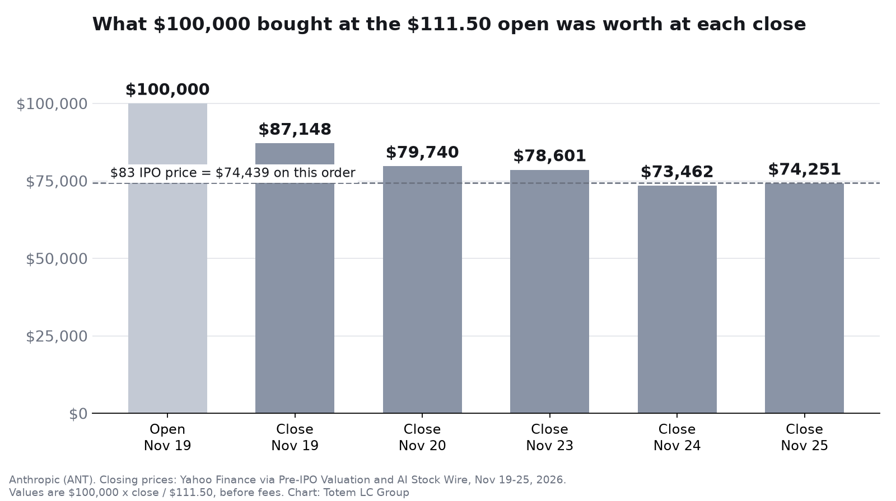
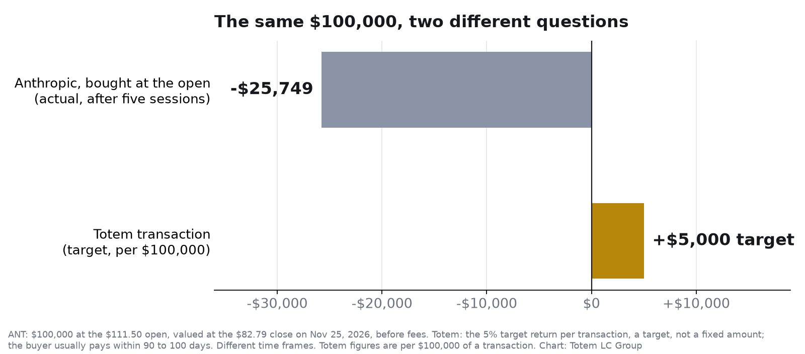

The Pop Illusion: $100,000 in Anthropic at the Open Was Worth $74,251 Five Sessions Later. What Does the Same $100,000 Do at Totem?
Anthropic's debut was the largest IPO of all time, and its first trade printed at $111.50, 34.3% above the $83 IPO price. One writeup did the math on a $10,000 order at that open: anyone who bought there finished the first day down about 13%. Scale that order up to $100,000, and five sessions later it was worth about $74,251. You call that a pop? Let the Totem Challenge speak for itself. We put that same $100,000 on our six-question scorecard, next to what every $100,000 of a Totem transaction targets, and we challenge the one word doing all the work in the IPO pitch: pop.
What the Pop Means for Your Money
If you have watched a hot stock fly on its first day and felt the pull to get in before it was gone, you are not alone, and last week that feeling set a record. On Thursday, November 19, Anthropic began trading on the Nasdaq under the ticker ANT after raising $81.3 billion in what CNBC called "the largest IPO of all time." The IPO price was $83. The opening auction kept climbing through the morning, and when the first trade finally printed at about 11:48 AM ET, it came in at $111.50, 34.3% above the IPO price. Within a minute the stock touched $115.10. More than 846 million changed hands that day, and one market writeup called it "the busiest first day of trading any stock has ever had."
That same writeup then did the math in public on the crowd that chased it: "Anyone who bought at the open finished the day down about 13%." The days after added to the bill. The stock closed at $88.91 on Friday, $87.64 on Monday and $81.91 on Tuesday, its first close below the $83 IPO price. On Wednesday it fell to $73.85 in the first 15 minutes, then rallied to close at $82.79, still 21 cents under the IPO price. So here is the question for anyone holding cash and watching the screen this fall: if $100,000 at the open was worth about $74,251 five sessions later, what does the same $100,000 do in a Totem transaction, and what does it risk to get there?
The Facts First
Start with the market's own numbers, because they are big ones. Anthropic priced at $83 and raised $81.3 billion. The first trade printed at $111.50, the first-day high was $115.10, and the first-day close was $97.17, 17.1% above the IPO price and 12.9% below the open. From there the closes ran $88.91 on November 20, $87.64 on November 23, $81.91 on November 24 and $82.79 on November 25. At Wednesday's close, the company was worth about $1.11 trillion. From the first-day high to Wednesday's low of $73.85, the stock fell 35.8%.
Now put the same $100,000 on it. Bought at the $111.50 open, $100,000 was worth about $87,148 at the first close, $79,740 after day two, $78,601 after day three, $73,462 after day four and $74,251 at Wednesday's close, before fees. That is a loss of about $25,749, or 25.7%, in five sessions. At Wednesday's low it was worth about $66,233. Even an allocation at the $83 IPO price was 21 cents under water per unit at Wednesday's close.
Who was in that crowd matters too. Vanguard looked at its own self-directed clients and found that the median Anthropic buyer put in around $2,000, about 1.1% of the portfolio. The tail is where it hurts: roughly 2.2% of Anthropic buyers put more than half of their portfolio into the stock. Vanguard's own words: "The real risk sits in the tail, not the median."
Now put Totem on that same $100,000, as a unit of comparison, not as an entry ticket. The minimum commitment is higher than $100,000, so every Totem figure in this issue is per $100,000 of a transaction. At the 5% target return per transaction, every $100,000 of a Totem transaction targets $5,000, and the buyer usually pays within 90 to 100 days. That $5,000 is a target, not a fixed amount.

Four Takeaways for Totem Members
First, the first price is set by the most eager buyer in the room. The writeup that ran the $10,000 math put it plainly: "the opening price is set by the most eager buyers in the room, and it is rarely the price the stock settles at." On November 19 that buyer paid $111.50 for a stock the underwriters had priced at $83 the night before. A Totem return does not come from a crowd at all. It comes from the vendor, which pays a transaction fee on the capital deployed, and members see the 5% target return per transaction before they choose it.
Second, a pop is paid to someone else. The 17.1% first-day gain belonged to whoever received an allocation at $83, and roughly 1,200 institutions lined up for one, with more than half receiving nothing. The buyer at the open got the other side of that trade: down 12.9% on day one. The pop is real. It just was not paid to the people who chased it. In a Totem transaction there is no allocation lottery and no opening auction. Members choose each transaction, or may authorize Totem to put returned funds into new transactions for twelve months at a time.
Third, keep the dollars lined up. The writeup used $10,000; we scale it tenfold to $100,000 on both sides, so the dollars stay lined up. At the open, $100,000 became about $74,251 by Wednesday's close. At the 5% target, every $100,000 of a Totem transaction targets $5,000, and the buyer usually pays within 90 to 100 days. What a member earns over a full year depends on how long each transaction takes and how quickly funds are redeployed, so we do not stretch that figure into an annual number. It is a target, not a promise. And because Totem's minimum commitment is higher than $100,000, this is per $100,000 of a transaction, not a way to start with $100,000.
Fourth, the protection is a different kind. A listed stock has no floor under your dollar. The price is whatever the next buyer pays, and on Wednesday morning that was $73.85. Totem has engineered out as many failure points as possible and insured the remaining uncertainty. Totem insures every participant's dollar. Insurance is subject to carrier terms, policy exclusions, and the claims process.
What the Stock Gets Right
Credit where it is due, because a fair challenge starts there. Anthropic is a real company that drew real demand. The IPO was upsized, priced above its original range, and drew roughly 1,200 institutions. Anyone who received an allocation at $83 was up 17.1% on the first day, and nothing in this issue says that demand was fake.
The stock also does three things a Totem transaction does not. You can buy it with any dollar amount at almost any brokerage. You can sell it on any trading day, in seconds, at that day's price. And the upside has no cap: on Wednesday alone, the stock rallied 12.1% from its morning low to the close. A Totem transaction targets 5% per transaction and no more.
That is the strongest case for the stock, and it is a strong one: open access, instant exit and unlimited upside. But notice what all three require. Access and exit happen at whatever price the market sets that day, and the upside runs both ways. Those are conditions on the buyer, not features of the stock, and that is where the comparison gets interesting.
Side by Side
Put the two next to each other, on the same $100,000, and the difference is not which one is better. It is what each one asks you to give up.
| Anthropic (ANT), bought at the open | Totem | |
|---|---|---|
| What you hold | Part ownership of a newly listed company, priced every second | Participation in one purchase order transaction |
| What sets the price | The most eager buyers at the open, then the market | A legally binding purchase order from a Fortune 500 company |
| Return | Whatever the market pays when you sell | The 5% target return per transaction |
| On $100,000 | About $74,251 at the Nov 25 close, bought at the $111.50 open | $5,000 target per transaction, on every $100,000 of a transaction |
| Time frame | None; you choose when to sell | Usually 90 to 100 days |
| Getting out | Any trading day, at that day's price | Not until the transaction settles |
| Upside | No cap | The 5% target return per transaction |
| What stands behind your dollar | The company and the next buyer | Totem insures every participant's dollar. Insurance is subject to carrier terms, policy exclusions, and the claims process. |
| Minimum | Any amount at a brokerage | Higher than $100,000 |
The 5% is a target, not a fixed amount. If the buyer does not pay, the vendor's fee may not be collected. Totem figures are per $100,000 of a transaction. The minimum commitment is higher than $100,000. ANT prices: Yahoo Finance via Pre-IPO Valuation and AI Stock Wire, November 19 to 25, 2026.
The Exposure Question
Now put a dollar figure on it, using the writeup's math scaled to $100,000. Place $100,000 in Anthropic at the $111.50 open and, five sessions later, you hold about $74,251. You can sell it today, and you can hold it and hope. Either way, the question you are asking every morning is what the next buyer will pay. That is the exposure, and on a stock with no floor it is a cost in what you lose, not just in what you miss.
A Totem member faces a different question, and it deserves the same plain treatment. The return depends on a buyer paying for goods it already ordered. Totem has engineered out as many failure points as possible and insured the remaining uncertainty, and insurance is subject to carrier terms, policy exclusions, and the claims process.

A Totem transaction does not ask what the crowd pays at the open. It asks whether a buyer pays for goods it already ordered.
No opening auction. No allocation lottery. No crowd setting your price.
The return on a Totem transaction comes from the vendor, which pays Totem a transaction fee on the capital deployed. Behind it is a legally binding purchase order from a Fortune 500 company, and the buyer pays, usually within 90 to 100 days. Members choose each transaction. Transactions have run since January 2023. Totem has engineered out as many failure points as possible and insured the remaining uncertainty.
The 5% is a target, not a fixed amount. Insurance is subject to carrier terms, policy exclusions, and the claims process. Funds in a transaction are not available until that transaction settles. Totem figures are per $100,000 of a transaction. The minimum commitment is higher than $100,000.
The Totem Scorecard
We score every issue the same way: six rounds, zero to five points each, thirty points possible. This week the stock wins two rounds outright: upside, and access with an instant exit. Totem wins protection of principal and the three rounds the IPO itself put on the table: what the dollar earned, whether you knew the terms before you committed, and track record.
ANT / Totem
13 out of 30 Totem Score:
20 out of 30
Verification Available
We do not expect anyone to take our word for this, least of all readers who watch the tape for a living. Every number about the stock in this issue comes from CNBC, Vanguard and published market data, and you can check them in two minutes. Every number about Totem should be just as checkable, and we will put you in touch with the people behind it.
Members can see all documents for each transaction on the platform, including the purchase order, the insurance policy, and the transaction's sources and uses. Vendor and buyer identities stay confidential, so if you want confirmation of a fact, such as that a buyer issued a purchase order or that a policy is in force, ask the desk and we will arrange it, for example through the insurer or the broker. The desk will walk you through participation and answer any question you want answered on the record.
To learn about private membership, call or email the desk.
Final Thought
Anthropic's debut was a record, and the arithmetic is honest: an $83 IPO price, a $111.50 first trade, and a crowd so large it set the busiest first day any stock has ever had. For anyone who received an allocation, that is exactly what an IPO is supposed to do, and nothing in this issue argues against the company.
What the five sessions also showed is the price of the pop. The word doing all the work in the IPO pitch is pop, and a pop is paid to whoever got in before the crowd. The buyer at the open paid the crowd's price, and five sessions later $100,000 was worth about $74,251.
A Totem transaction asks you to give up something different: the instant exit and the unlimited upside, in exchange for a target return set by a purchase order, not an opening auction, and a buyer that usually pays within 90 to 100 days. On the same $100,000, that target is $5,000 per transaction. Match your capital to the structure, with eyes open on the trade-offs. We fund what has already been sold.
If you have any questions about this issue, or anything else, feel free to contact us at any time:
Thank you.
Appendix: Source Material
- CNBC, "Dow closes higher Wednesday, wiping out 1,100-point loss in stunning rebound: Live updates," updated November 25, 2026, 4:17 PM ET (https://www.cnbc.com/2026/11/24/stock-market-today-live-updates-.html) - Anthropic listed on the Nasdaq last Wednesday, "raising $81.3 billion in the largest IPO of all time"; opened at $111.50 on Thursday; $83 IPO price; $81.91 close on Monday per the 4:51 AM ET entry (the Pre-IPO Valuation and AI Stock Wire tables date that close to Tuesday, November 24); Dow intraday 1,100-point drop and 50,182.95 close.
- Elite Era Trends, "ANT's First Day: Opened $111.50, Closed $97.17 (+17%)," checked November 20, 2026 (https://eliteeratrends.com/anthropic-stock-first-day-ant-111-50-close-97-17/) - first trade $111.50 at about 11:48 AM ET (+34.3%); high $115.10; close $97.17 (+17.1% vs IPO, -12.9% from the open); "Anyone who bought at the open finished the day down about 13%"; $100,000 at the open worked example; more than 846 million traded, "the busiest first day of trading any stock has ever had"; "the opening price is set by the most eager buyers in the room, and it is rarely the price the stock settles at"; roughly 1,200 institutions lined up, more than half received none.
- Pre-IPO Valuation, "Anthropic IPO price: $83 a share," updated November 26, 2026 (https://preipovaluation.com/anthropic-ipo/price/) - daily open, high, low and close November 19 to 25 (Yahoo Finance); $73.85 low and $82.79 close on November 25; 35.8% from the $115.10 high to the $73.85 low; $83 IPO price against a $70 to $78 range, with an enlarged deal; about $1.11 trillion market value at the November 25 close.
- AI Stock Wire, "Anthropic (ANT) stock tops its $83 IPO price, then slips below it," by Jennifer Song, November 25, 2026, 2:27 PM ET (https://aistockwire.com/blog/anthropic-ant-stock-climbs-back-above-83-ipo-price-cathie-wood-ark-november-2026) - closes $97.17, $88.91, $87.64, $81.91, $82.79; $73.85 low at 9:45 AM ET in the first 15 minutes; 12.1% gain from the low to the close; close 21 cents below the IPO price.
- Vanguard, "IPOs drew crowds, not a frenzy" (https://corporate.vanguard.com/content/corporatesite/us/en/corp/articles/ipos-drew-crowds-not-frenzy.html) - median Anthropic buyer around $2,000, 1.1% of portfolio; roughly 2.2% of Anthropic buyers put more than half of their portfolio into the stock; "The real risk sits in the tail, not the median."
- Totem LC Group, Prospective Member FAQ - return, timing, fees, access to funds, document access, minimum commitment.
- Totem Desk Handbook, section 5, items 1 to 10 - the 5% target return per transaction; the buyer pays, usually within 90 to 100 days; legally binding purchase order from a Fortune 500 company; transactions since January 2023; no member fees; track record line; "Totem has engineered out as many failure points as possible and insured the remaining uncertainty."
Illustrative arithmetic: $100,000 x 97.17 / 111.50 = $87,148; x 88.91 / 111.50 = $79,740; x 87.64 / 111.50 = $78,601; x 81.91 / 111.50 = $73,462; x 82.79 / 111.50 = $74,251; x 73.85 / 111.50 = $66,233; $100,000 - $74,251 = $25,749 (25.7%); x 83 / 111.50 = $74,439; $1,000,000 x 82.79 / 111.50 = $742,511; $1,000,000 x 73.85 / 111.50 = $662,332; $100,000 x 5% = $5,000 target; $1,000,000 x 5% = $50,000 target. Values are before fees and assume a fractional purchase at exactly $111.50. Totem figures are per $100,000 of a transaction. The minimum commitment is higher than $100,000. These are past readings, not forecasts of ours, and the 5% is a target, not a fixed amount. Mentions of Anthropic or any stock are not recommendations to buy or sell anything.
This material is provided for informational purposes only and does not constitute legal, tax, securities, lending, investment, or financial advice. Participation in commercial transactions involves risk, including possible loss of capital. Historical performance does not guarantee future outcomes. Insurance arrangements are subject to carrier terms, policy exclusions, claims processes, and carrier performance and do not guarantee transaction performance or repayment. Totem LC Group, LLC is a Wyoming limited liability company.
This guide is for information only and is not an offer to sell or a solicitation of an offer to buy any security. The Private Placement Memorandum and Offering Documents govern.